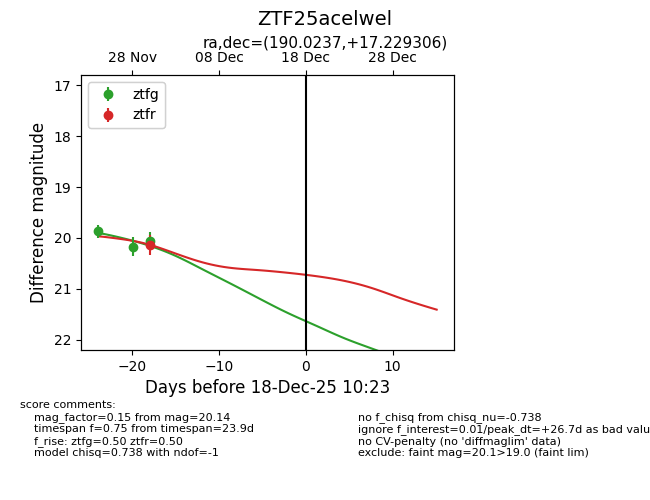
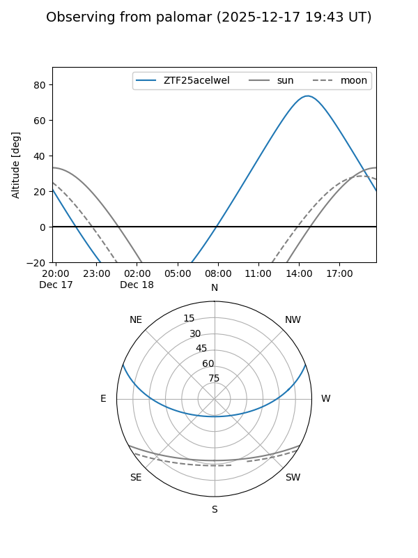

ZTF25acelwel
Target ZTF25acelwel at 2025-12-18 11:17
Aliases and brokers:
FINK: fink-portal.org/ZTF25acelwel
Lasair: lasair-ztf.lsst.ac.uk/objects/ZTF25acelwel
ALeRCE: alerce.online/object/ZTF25acelwel
alt names
ZTF25acelwel (ztf,fink_ztf)
Coordinates:
equatorial (ra, dec) = 190.0237,+17.22931
equatorial (HMS+DMS) = 12:40:05.69,+17:13:45.50
galactic (l, b) = (287.5171,+79.75994)
Photometry
last ztfg=20.07, ztfr=20.14
3 ztfg, 1 ztfr detections
Lightcurve

Visibility


Additional plots